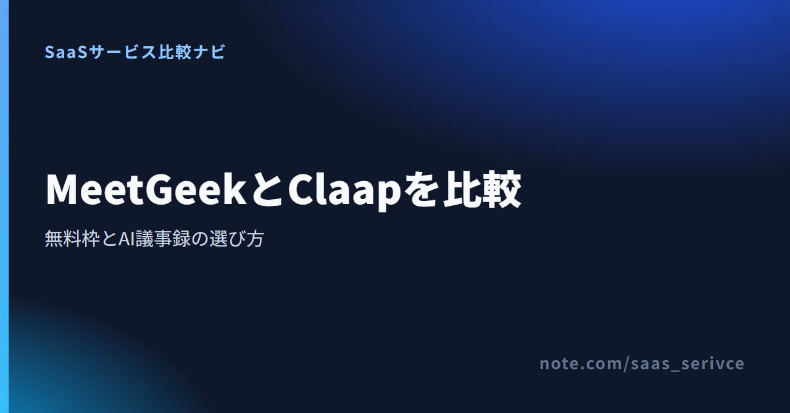
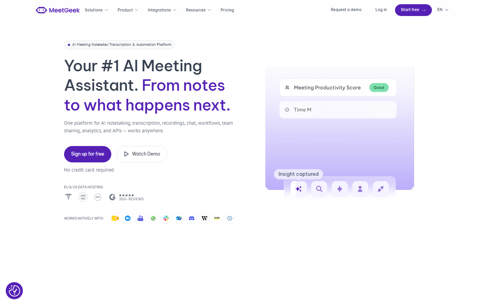
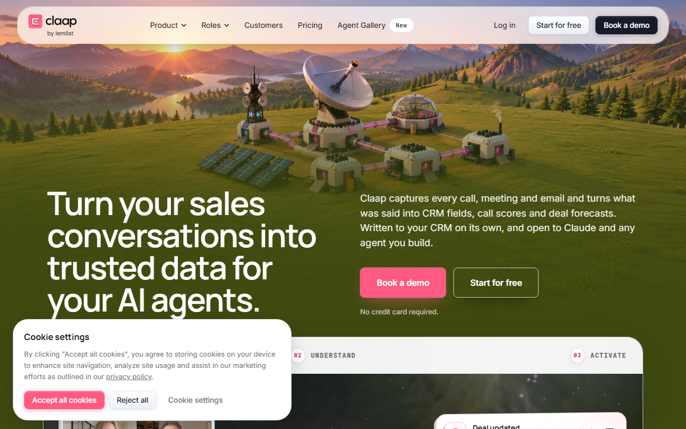

AI議事録ツールは、定例会議や商談を文字に起こし、少人数チームで要点を共有するためのサービスです。MeetGeekとClaapでは、無料枠の数え方が異なります。この記事では料金と日本語対応を比べ、有料へ切り替える目安も紹介します。
迷ったらMeetGeekがおすすめです。無料の文字起こし枠が月3時間あり、毎月更新されます。
無料Basicと14日間トライアルの違いを料金メニューで見比べられます。
無料枠は、次の項目を順に比べます。
無料枠の集計は、MeetGeekが月単位、Claapが累計です。上限と集計期間をセットで比べてください。
会議の回数だけでは、必要な枠を見積もれません。30分の定例が月4回なら合計120分、60分の商談が月5回なら300分です。会議は予定より延びることもあるため、少し余裕を加えて無料上限と比べましょう。
枠が毎月更新されるMeetGeekは、月ごとの会議時間で判断できます。合計300分が累計枠となるClaapでは、Basicで試せる回数を計算します。
日本語音声を文字に起こせても、設定画面まで日本語で表示されるとは限りません。問い合わせ窓口で日本語を使えるかも、別に調べます。管理画面やヘルプが英語なら、導入前に操作手順を用意しておきましょう。
記録したい会議の種類によって、見るべき項目は変わります。Web会議で比べるのは、Bot参加型と録画ファイル送信型。対面会議では、録音方法とファイルの取り込み方が判断材料です。
取引先との会議では、外部Botが参加者として表示されても問題ないか、事前に社内で相談します。普段の記録方法も書き出すと、製品名や機能名だけでは見えない条件を洗い出せます。
文字起こしができても、必要な期間まで記録を残せなければ仕事には合いません。週次会議の振り返りなら、数か月で十分でしょう。半期の商談分析や長期案件では、無料枠の保存期間が足りないこともあります。
読み返すのが自分だけか、営業チームやプロジェクトメンバーにも共有するかを決めます。無料枠の上限と保存期限後の保管先まで考えておけば、移行時にも慌てません。
一般的な会議の記録にはMeetGeek、AIを使った営業会話の分析にはClaapが向いています。どちらも無料で試せるので、会議を記録したいのか、商談動画を蓄積して分析したいのかで選び分けましょう。

画面には、無料登録とカード不要の案内が英語で表示されています。
文字起こしは、無料Basicで月3時間まで使えます。保存期間は、文字起こしが3か月、音声が1か月。議事録のテキストと元音声で保管期間が異なる点に注意しましょう。
有料Proは、月払いが$15.99/ユーザー/月、年払いが$9.99/ユーザー/月です。1ドル=158円で換算すると、月払いは約2,530円、年払いの月額相当は約1,580円。金額は為替によって変わります。14日間トライアルは、継続して使える無料Basicとは別です。
MeetGeekは、日本語音声の文字起こしに対応しています。AI Summary & InsightsとAI Chatも日本語対応。画面UIとサポートの対応言語は、公式情報に記載がありません。日本語窓口が必要なら、導入前に問い合わせましょう。
料金メニューでは、無料Basicと14日間トライアルの違いに加え、有料プランも見比べられます。

画面には、無料登録とカード不要の案内が英語で表示されています。
Claapでは、無料Basicの上限が1ユーザー累計10動画・合計300分です。保存期間は3か月。300分は毎月復活しません。短い動画を数多く残すと、300分より先に10動画の上限へ達します。
Proは月払い€30、年払い€24/ライセンス/月で、年払いは20%割引です。Proに含まれるのは、月1,000分とAIクレジット500。録画量が多い人向けのBusinessは録画時間が無制限で、AIクレジットは1,000です。
Claapは日本語音声の文字起こしに対応しています。ただし、無料Basicで使える範囲や、画面UIとサポートの対応言語は公式情報から分かりません。支払い方法はカード。SEPAなどカード以外の方法を希望する場合や、日本発行カードを使いたい場合は、購入前に営業窓口へ相談しましょう。
Claapでは、残り時間と動画数をそれぞれ見ます。300分未満でも、10動画に達すれば無料枠の上限です。
料金メニューでは、無料Basicの動画数・合計時間と有料プランの条件を確認できます。
30分会議では、MeetGeekが月6回分、Claapが累計10回分。60分会議では、MeetGeekが月3回分、Claapが累計5回分です。 この回数はClaap Basicの累計上限に基づくため、翌月には戻りません。
月180分がMeetGeekの上限。30分会議なら、180分÷30分で6回です。週1回の定例を4回記録しても、単発の打ち合わせを2回ほど追加できます。
累計300分を30分会議に使うと、300分÷30分で10回分です。これは10動画の上限とも一致します。会議以外の動画も同じ枠に保存するなら、その本数を先に差し引きましょう。
MeetGeekでは、180分÷60分で月3回が上限。週1回の60分会議を毎回記録すると、月によっては無料枠を超えます。重要な会議に絞って記録するのが現実的でしょう。
Claapは300分÷60分で累計5回です。週1回の商談なら約5週間で使い切る計算になり、振り返り用の動画も追加すると累計300分の上限に早く近づきます。
保存期間を見ると、MeetGeekは文字起こしが3か月、音声が1か月です。後で聞き直す会議は、音声の保存期限に合わせて残し方を決めておきましょう。Claapでも無料Basicの保存期間は3か月。四半期をまたいで参照する記録には足りません。
無料枠を比べるときは、記録できる時間と更新単位を見ます。保存期間も、会議の実態に合うか比べましょう。毎月続けて使うならMeetGeek、累計枠の中で使い勝手を試すならClaap Basicが候補です。
料金ページへ進むと、月3時間の無料枠と音声・文字起こしの保存条件が分かります。
料金メニューでは、累計10動画・300分の無料枠と有料プランの録画量を見比べられます。
MeetGeekとClaapは、日本語音声の文字起こしに対応しています。ただし、次の4点は別々に見ます。
公式情報では、画面UIと問い合わせ窓口の対応言語が分かりません。日本語音声は文字に起こせます。AI Summary & InsightsとAI Chatも日本語対応。日本語UIや日本語窓口が必要なら、契約前にサポートへ問い合わせましょう。
チームへ導入する際は、管理者だけでなく、議事録を読むメンバーにも操作画面を見てもらいます。そのうえで、今の表示言語でも毎日の会議に使えるかを判断します。
Claapは日本語音声を文字に起こせますが、無料Basicで使える範囲は公式情報から分かりません。画面UIとサポートの対応言語も記載がなく、日本語UIや日本語窓口の有無は不明です。
登録後は、無料Basicで日本語を扱えるかを画面で試します。希望する言語で問い合わせられるかは、メールやチャットで尋ねます。
日本語の認識精度を比べるときは、同じ条件の短い会議で試します。製品ごとに別の音声を使うと、結果の差がツールと録音環境のどちらに由来するのか分かりません。
一つの数値やランキングだけでは、精度を判断できません。自社の会議音声を使い、修正にかかる手間まで比べてみましょう。その手間が、有料プランへ移るかどうかの判断材料になります。
無料枠や保存期間が仕事の妨げになったら、有料化を検討します。共有機能やAIの利用量も判断材料です。
MeetGeekで毎月3時間を超えるなら、記録する会議を選ぶか、有料Proへ移るかを決めます。繁忙月だけ超えるのか、通常月でも足りないのかが判断の分かれ目。契約を急がなければ、余計な支出を避けられます。
10動画・300分はClaapの累計上限。どちらかに達すると、Basicでは利用を続けられません。引き続き使うなら、有料プランを比べます。
四半期をまたぐ案件では、3か月の保存期間が足りない場合があります。半年単位の営業活動や長期案件も同じ。音声を残せる期間は、MeetGeekの無料Basicで1か月です。文字起こしだけで足りるか、元音声も残すかを先に決めましょう。
保存期限のたびにデータを手作業で移すようなら、有料化を検討します。移行先では、機密情報をどこに保管するかも社内で先に決めます。
共有や権限管理を理由に有料化する場合は、必要な機能が対象プランに含まれるかを料金ページで確かめます。両サービスの席数や権限の差は、現時点では未確認です。チームで使うからといって、上位プランを選ぶのは避けましょう。
Claap Proには月1,000分とAIクレジット500が含まれます。Businessは録画時間に上限がなく、AIクレジットは1,000。有料プランへ移る前に、録画時間とAI利用量を分けて見積もります。
月1,000分に収まるならProが候補。録画時間が月1,000分を継続して超え、AIクレジットも500では不足するならBusinessを比べます。最初から上位プランを選ばず、直近の利用量を基準にするほうが無駄がありません。
料金ページでは、無料BasicとProの文字起こし枠や料金の差が分かります。
料金メニューでは、ProとBusinessの録画時間・AIクレジットを比較できます。
よく迷うのは、無料枠と有料化の境目です。日本語で使える範囲や支払い条件も分けて見ましょう。
1位でも、無料枠の更新単位や使い方が自社に合うとは限りません。この記事で比べているのはMeetGeekとClaapだけ。一般的な会議を毎月記録するならMeetGeek、営業商談や動画管理を累計枠で試すならClaapを先に検討します。
無料プランは上限内なら継続して使えますが、無料トライアルで有料機能を試せるのは限られた期間だけです。MeetGeekには無料Basicと14日間トライアルがあり、Claapにも無料Basicがあります。登録画面では、期間終了後も無料で使うのか、有料機能まで試すのかを分けて選びましょう。
まず、スマホで対面会議を録音したいのかを決めます。Web会議の記録をスマホで読みたいだけなら、必要な機能は別です。MeetGeekとClaapはスマホアプリの対応状況が不明なため、この記事ではアプリとして順位を付けていません。スマホ利用が必須なら、登録前に次の点を確かめましょう。
MeetGeekはUSD建てです。請求書は請求ポータルからダウンロードでき、メールでも受け取れます。利用できる決済手段と日本発行カードの可否は公式情報にないため、購入画面かサポートで確かめてください。
ClaapはEUR建てで、カード払いに対応しています。SEPAなどカード以外の支払い方法を希望する場合は、営業窓口へ相談します。日本発行カードを使えるかは、購入前に確かめてください。
毎月3時間以内の一般会議なら候補はMeetGeek。営業商談や動画管理を累計300分まで試すならClaapが合います。 枠や保存期間が足りなくなったら、有料プランを比べてください。
まず、自分の会議を無料枠で何回記録できるかを計算します。続けて、必要な期間まで保存できるか、日本語で使えるかを比べましょう。市場全体の順位より、この3点を優先してください。
公式サイトから無料登録へ進み、月3時間の無料枠で実際に記録しながら、保存条件も確かめられます。
公式サイトから無料登録へ進み、累計10動画・300分の範囲で実際の使い勝手を試せます。